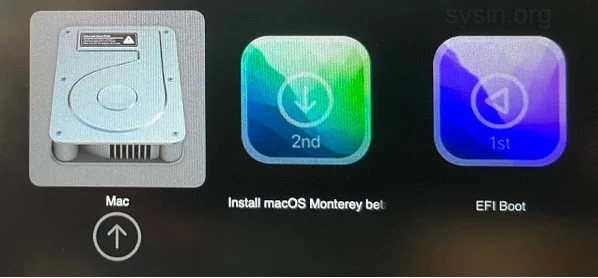

感谢读者的反馈！已更新：在不受支持的 Mac 上安装 macOS Big Sur、Monterey、Ventura (OpenCore Legacy Patcher)
注意：本文涉及的项目已经下线，开发者已经跑路，本文已经标记为 “过时”、“不可用”。本文已经更新重写。
请访问原文链接：在不受支持的 Mac 上安装 macOS Big Sur、Monterey、Ventura (OpenCore Legacy Patcher)，查看最新版。原创作品，转载请保留出处。
作者主页：www.sysin.org
抄袭者 macz、qq_23930765、hanzheng260561728 请远离本站！！！
随着 macOS Big Sur 11.5 的发布，macOS Big Sur 可靠性和性能已经大幅提升，Big Sur 更新的使命已经基本完成。是时候体验和准备迎接 macOS Monterey 了！
1. macOS Monterey 简介
2021 年 6 月 8 日，在今天凌晨举行的 Apple WWDC 2021 大会上，苹果公司正式发布了 macOS Monterey。新版操作系统新功能及特性如下：

照片、消息和更多升级共享 iOS 和 iPadOS 15 的功能
通用控制：可以让你用一种惊人的方式从 Mac 控制其他苹果设备
从 iOS 设备 AirPlay 到 Mac
作为 “自动操作” 的替代品引入的快捷方式应用程序
Safari 在所有设备上都重新设计了新的 UI、选项卡组和 web 扩展

按照惯例，macOS Monterey 正式版将在今年秋季正式推送。
2. macOS Monterey 硬件要求
- MacBook 2016 年初及后续机型 进一步了解>
- MacBook Air 2015 年初及后续机型 进一步了解>
- MacBook Pro 2015 年初及后续机型 进一步了解>
- Mac mini 2014 年末及后续机型 进一步了解>
- Mac Pro 2013 年末及后续机型 进一步了解>
- iMac 2015 年末及后续机型 进一步了解>
- iMac Pro 2017 年及后续机型
对比 macOS Big Sur 的硬件要求，减少的机型，即本文的目标机型。
3. 本文支持的 Mac 机型
(1) Mid 2013 to 2015：支持，运行良好
请注意这个区间的机型，部分是官方支持，不需要补丁。以下是补丁后可以支持 macOS Monterey 的具体机型列表，相对可以完美运行。本文主要针对这些机型。
| 机型 | Big Sur 兼容 | Monterey 兼容 | 本文目标机型 |
|---|---|---|---|
| MacBook | 2015 年和后续机型 进一步了解> | 2016 年初及后续机型 进一步了解 > | MacBook（视网膜显示屏，12 英寸，2015 年初） |
| MacBook Air | 2013 年和后续机型 进一步了解> | 2015 年初及后续机型 进一步了解 > | MacBook Air（13 英寸，2014 年初），MacBook Air（11 英寸，2014 年初），MacBook Air（13 英寸，2013 年中），MacBook Air（11 英寸，2013 年中） |
| MacBook Pro | 2013 年末和后续机型 进一步了解> | 2015 年初及后续机型 进一步了解 > | MacBook Pro（视网膜显示屏，15 英寸，2014 年中），MacBook Pro（视网膜显示屏，13 英寸，2014 年中），MacBook Pro（视网膜显示屏，15 英寸，2013 年末），MacBook Pro（视网膜显示屏，13 英寸，2013 年末） |
| Mac mini | 2014 年和后续机型 进一步了解> | 2014 年末及后续机型 进一步了解 > | N/A |
| iMac | 2014 年和后续机型 进一步了解> | 2015 年末及后续机型 进一步了解 > | iMac（视网膜 5K 显示屏，27 英寸，2014 年末），iMac（21.5 英寸，2014 年中） |
| iMac Pro | 2017 年和后续机型 (所有机型) | 2017 年及后续机型 | N/A |
| Mac Pro | 2013 年和后续机型 进一步了解> | 2013 年末及后续机型 进一步了解 > | N/A |
(2) Early 2012 to Early 2013：可以运行，蓝牙不可用
这些 Mac 需要修补 kexts（使用 PatchSystem.sh 很简单）才能获得 WiFi、图形加速和睡眠/唤醒。但是，即使您修补 kexts，蓝牙也不起作用（因此 “连续互通” 将不起作用）。这是一个相当大的妥协，因此请确保在升级到 Monterey 之前了解这一点 (sysin)。以后可能会改变，暂时就是这样。
蓝牙不工作，Apple Continuity 即 连续互通 将不可用，安装 Monterey 没有意义，建议继续 Big Sur，如果是不受支持的机型，参看文章：在不受支持的 Mac 上安装 macOS Big Sur 11。
(3) Late 2011 and Below：不用考虑
这些 Mac 目前不受支持，因为它们需要使用 OpenGL 的传统图形加速，而不是 Metal，这将是一段时间以后的事情。没有图形加速，它们会像蜗牛一样运行（想象一下等待 14 秒才能将 Safari 关闭）。
4. 安装准备
(1) 下载最新的 Mini Monterey Patcher（已经 404），替代：netgc/Mini-Monterey-Patcher
备用：
百度网盘链接：https://pan.baidu.com/s/1DDKFQDlGMoECRh6DI6yCAg 提取码：rud6
下载的文件解压备用。
(2) 下载 macOS Monterey 镜像
下载后打开镜像，将 “安装 macOS Monterey” App 拖拽到 Applications（应用程序）下。
(3) USB 存储设备 16G 及以上
可以是 U 盘，也可以是 SD 卡，当然最好是 SSD 的移动硬盘，容量 16G 及以上。
5. 操作步骤
(1) 创建启动介质
准备一个 16G 或者以上的 U 盘（或者其他 USB 存储设备，以下简称 U 盘），打开 “实用工具 > 磁盘工具”，选择 U 盘，点击 “抹掉”，格式如下：
- Mac OS X 扩展（日志式）；
- GUID 分区图；
- 分区名称：sysin（默认为 Untitled，可以自定义，注意下面终端命令中的 sysin 也要改成你自定义的同样的名称）
打开 “终端”，执行如下命令：
1 | sudo /Applications/Install\ macOS\ Monterey.app/Contents/Resources/createinstallmedia --volume /Volumes/sysin |
根据提示输入当前用户密码（sudo 密码），按 Y 确认，等待几分钟即可完成。
注意：创建完毕后，分区名称将自动修改为：
Install\ macOS\ Monterey
(2) 运行 PatchUSB.sh
打开 “终端”，将 Mini-Monterey-Patcher 中的 PatchUSB.sh 拖拽到上面，按回车，根据提示输入当前用户密码（sudo 密码）。
过程如下，完成后，该 U 盘可以用来启动安装了。
1 | /Volumes/SYSIN/Mini-Monterey-Patcher-0.1.0/PatchUSB.sh |
(3) 自动执行补丁
重启系统，按住 Option 键不放直到出现启动分区选择画面，此时会额外出现两个图标 “Install macOS Monterey Beta” 和 “EFI Boot”，选择 “EFI Boot”，此时将从 “EFI Boot” 分区启动，等待数秒将自动关机（可能瞬间关机），该过程将执行 disable SIP, disable authenticated root 等操作。

(4) 安装 macOS Monterey
重新开机，按住 Option 键不放直到出现启动分区选择画面，选择 Install macOS Monterey Beta，启动后，选择 “磁盘工具”，抹掉系统分区（默认名称为 “Macintosh HD”，格式选择 APFS），开始正常安装过程，具体不在赘述。
直接选择原有系统分区可以升级安装（不推荐，可以用于以后新版 Monterey 的升级）。
如果您的 Mac 是属于 Mid 2013 to 2015 机型，此时已经可以正常体验 Monterey 了。以下步骤可以忽略。
如果您的 Mac 是属于 Early 2012 to Early 2013 机型，需要执行以下额外步骤让 Wi-Fi 和图形加速等功能工作正常。
(5) 解决网卡驱动等问题
再次使用 U 盘启动到 “Install macOS Monterey Beta” 分区，启动后，选择 “Utilities (实用工具) -> Terminal（终端）”，执行如下命令(三种格式都可以支持，任选一个，“Macintosh HD” 是默认名称，根据实际名称修改)：
1 | /Volumes/Image\ Volume/PatchSystem.sh /Volumes/Macintosh\ HD |
(6) 重启
重启后正常登录 macOS Monterey，此时 Wi-Fi 修复成功，macOS Monterey 已经基本可以正常运行。但是蓝牙是无法工作的，这将导致 连续互通 功能无法工作。
后续补丁有可能更新来解决此问题，请关注相关项目和本文更新。
6. 常见问题解答
(1) 是否支持 SIP（系统完整性保护） 和 FileVault（文件保险箱）？
这两项功能都需要关闭，SIP 将在执行脚本过程中自动关闭，FileVault 默认是关闭的，请不要开启。
(2) 无法检测到软件更新，这是正常的，硬件仍然不符合要求，如果需要更新参看下一章节描述。
(3) Recovery Mode（恢复模式）将不可用，这是正常的，可以使用启动 U 盘替代恢复模式，后续版本可能会修复这个问题。
(4) 是否可以重置 NVRAM/PRAM？答案是可以。
(5) 蓝牙和 “连续互通” 功能无法使用，如前所述，请确认已经了解这种情况（后续版本可能会解决）。
7. 如何升级
在 “系统偏好设置” - “软件更新” 中并检测不到最新的系统版本，因为该 Mac 仍然不符合新的系统兼容性要求。
如果需要更新，我们需要重复上述步骤，使用新版的 macOS Monterey 镜像重新安装，只是在操作步骤（4）中，不要抹掉分区，直接选择原来的分区进行安装，将自动进行系统升级。
未尽事宜请访问项目主页：Mini Monterey Patcher（已经 404），替代：netgc/Mini-Monterey-Patcher。
8. 项目更新
感谢读者的反馈！已更新：在不受支持的 Mac 上安装 macOS Big Sur、Monterey、Ventura (OpenCore Legacy Patcher)
注意：本文涉及的项目已经下线，开发者已经跑路，本文已经标记为 “过时”、“不可用”。本文已经更新重写。
促销信息：
>> 阿里云：新用户2核2G仅需9元/月，1核2G云服务器仅需87元/年（限时优惠，不定期更新）
>> 腾讯云：1核2G云服务器首年50元，爆款2核4G带宽8M只要74元/年（限时优惠，不定期更新）
如果文章中使用的内容或图片侵犯了您的版权，请联系作者删除。如果您喜欢这篇文章或者觉得它对您有所帮助，欢迎您发表评论，也欢迎您分享这个网站，或者赞赏一下作者，谢谢！
 支付宝赞赏
支付宝赞赏
 微信赞赏
微信赞赏
赞赏一下